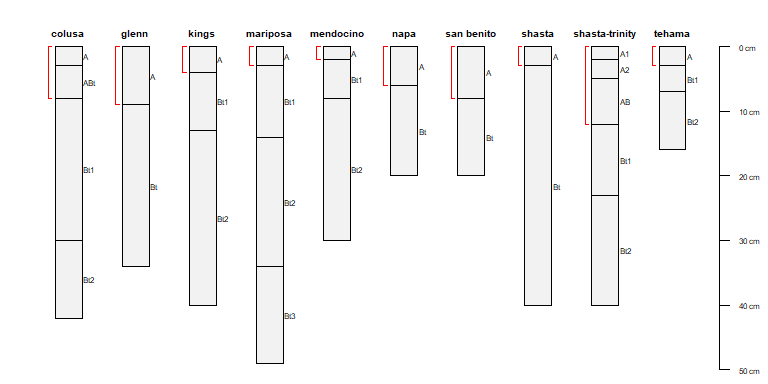
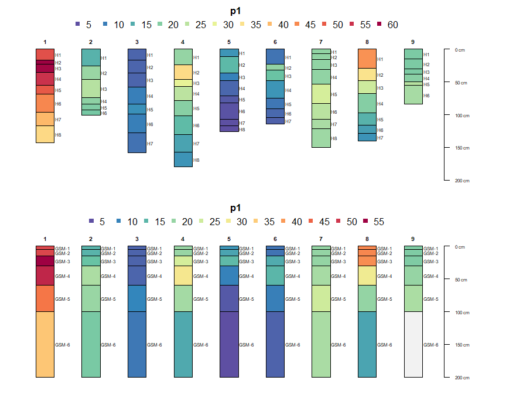

Chapter 2 Introduction to SoilProfileCollection Objects
2.1 Introduction
This is a very basic introduction to the SoilProfileCollection class object defined in the aqp package for R. The SoilProfileCollection class was designed to simplify the process of working with the collection of data associated with soil profiles: site-level data, horizon-level data, spatial data, diagnostic horizon data, metadata, etc. Examples listed below are meant to be copied/pasted from this document and interactively run within R. Comments (green text) briefly describe what the code in each line does. This document assumes a basic level of proficiency with R which can be gained by reviewing some of the material in tutorials like this. Further documentation on objects and functions from the aqp package can be accessed by typing help(aqp) (or more generally, ?function_name) at the R console.
2.2 Object Creation
SoilProfileCollection objects are typically created by “promoting” data.frame objects (rectangular tables of data) that contain at least three essential columns:
- an ID column uniquely identifying groups of horizons (e.g. pedons)
- horizon top boundaries
- horizon bottom boundaries
The data.frame should be pre-sorted according to the profile ID and horizon top boundary. Formula notation is used to define the columns used to promote a data.frame object:
In this tutorial we will use some sample data included with the aqp package, based on characterization data from 10 soils sampled on serpentinitic parent material as described in McGahan et al, 2009.
# load required packages, you may have to install these if missing:
# install.packages('aqp', dep = TRUE)
# remotes::install_github("ncss-tech/aqp", dependencies=FALSE, upgrade=FALSE, build=FALSE)
library(aqp)
library(Hmisc)
library(lattice)
library(MASS)
# load sample data set, a data.frame object with horizon-level data from 10 profiles
data(sp4)
str(sp4)## 'data.frame': 30 obs. of 13 variables:
## $ id : chr "colusa" "colusa" "colusa" "colusa" ...
## $ name : chr "A" "ABt" "Bt1" "Bt2" ...
## $ top : int 0 3 8 30 0 9 0 4 13 0 ...
## $ bottom : int 3 8 30 42 9 34 4 13 40 6 ...
## $ K : num 0.3 0.2 0.1 0.1 0.2 0.3 0.2 0.6 0.8 0.4 ...
## $ Mg : num 25.7 23.7 23.2 44.3 21.9 18.9 12.1 12.1 17.7 16.4 ...
## $ Ca : num 9 5.6 1.9 0.3 4.4 4.5 1.4 7 4.4 24.1 ...
## $ CEC_7 : num 23 21.4 23.7 43 18.8 27.5 23.7 18 20 31.1 ...
## $ ex_Ca_to_Mg: num 0.35 0.23 0.08 0.01 0.2 0.2 0.58 0.51 0.25 1.47 ...
## $ sand : int 46 42 40 27 54 49 43 36 27 43 ...
## $ silt : int 33 31 28 18 20 18 55 49 45 42 ...
## $ clay : int 21 27 32 55 25 34 3 15 27 15 ...
## $ CF : num 0.12 0.27 0.27 0.16 0.55 0.84 0.5 0.75 0.67 0.02 ...# optionally read about it...
# ?sp4
# upgrade to SoilProfileCollection
# 'id' is the name of the column containing the profile ID
# 'top' is the name of the column containing horizon upper boundaries
# 'bottom' is the name of the column containing horizon lower boundaries
depths(sp4) <- id ~ top + bottom
# register horizon designation column
hzdesgnname(sp4) <- 'name'
# check it out:
class(sp4)## [1] "SoilProfileCollection"
## attr(,"package")
## [1] "aqp"## SoilProfileCollection with 10 profiles and 30 horizons
## profile ID: id | horizon ID: hzID
## Depth range: 16 - 49 cm
##
## ----- Horizons (6 / 30 rows | 10 / 14 columns) -----
## name id hzID top bottom K Mg Ca CEC_7 ex_Ca_to_Mg
## A colusa 1 0 3 0.3 25.7 9.0 23.0 0.35
## ABt colusa 2 3 8 0.2 23.7 5.6 21.4 0.23
## Bt1 colusa 3 8 30 0.1 23.2 1.9 23.7 0.08
## Bt2 colusa 4 30 42 0.1 44.3 0.3 43.0 0.01
## A glenn 5 0 9 0.2 21.9 4.4 18.8 0.20
## Bt glenn 6 9 34 0.3 18.9 4.5 27.5 0.20
## [... more horizons ...]
##
## ----- Sites (6 / 10 rows | 1 / 1 columns) -----
## id
## colusa
## glenn
## kings
## mariposa
## mendocino
## napa
## [... more sites ...]
##
## Spatial Data: [EMPTY]2.3 Accessing, Setting, and Replacing Data
“Accessor” functions are used to extract specific components from within SoilProfileCollection objects.
Methods that return a column name. These are useful for extracting depths, horizon designations, IDs, etc. before taking an SPC apart for a specific task.
idname(sp4): extract profile ID name (column name used to init SPC)hzidname(sp4): horizon ID name (typically automatically built at init time)horizonDepths(sp4): horizon top / bottom depth names (used to init SPC)hzdesgnname(sp4): horizon designation name (if set)
Methods that return a vector of values.
profile_id(sp4): profile IDs, in orderhzID(sp4): horizon IDs, in orderhzDesgn(sp4): horizon designations, in order
Methods that return site/horizon attribute column names.
names(sp4): site + horizon names concatenated into a single vectorhorizonNames(sp4): horizon namessiteNames(sp4): site names
Profile and horizon totals.
length(sp4): number of profiles in collectionnrow(sp4): number of horizons in collection
Other methods.
depth_units(sp4): defaults to ‘cm’ at SPC creationmetadata(sp4)
2.4 Horizon and Site Data
Typically, horizon and site data are the most important components of SoilProfileCollection objects. Both are internally stored as data.frame, data.table, or tbl_df objects; with one or more rows (per profile ID) in the horizon table and one row (per profile ID) in the site table. Columns from either table can be accessed with the $ style notation of data.frames. New data can be assigned to either table in the same manner, as long as the length of the new data is either:
- same length as the number of profiles in the collection (target is the site table)
- same length as the number of horizons in the collection (target is the horizon table)
# assignment of new data to existing or new attributes
sp4$elevation <- rnorm(n=length(sp4), mean=1000, sd=150) # site-level, based on length of assigned data
sp4$thickness <- sp4$bottom - sp4$top # horizon-level
# extraction of specific attributes by name
sp4$clay # vector of clay content (horizon data)## [1] 21 27 32 55 25 34 3 15 27 32 25 31 33 13 21 23 15 17 12 19 14 14 22 25 40 51 67 24 25 32## [1] 1057.9340 1093.8384 1070.2459 945.5708 799.5650 891.9214 1018.0275 941.4441 804.8106
## [10] 967.5747# assign a single single value into horizon-level attributes
sp4$constant <- rep(1, times=nrow(sp4))
# promote horizon-level data to site-level data (when it makes sense to do so)
# note that this _moves_ the named column from horizon to site
site(sp4) <- ~ constant Horizon and site data can also be modified via extraction to data.frame followed by replacement (horizon data) or join (site data). Note that while this approach gives the most flexibility, it is also the most dangerous– replacement of horizon data with new data that don’t exactly conform to the original sorting may corrupt your SoilProfileCollection.
# extract horizon data to data.frame
h <- horizons(sp4)
# add a new column and save back to original object
h$random.numbers <- rnorm(n=nrow(h), mean=0, sd=1)
# _replace_ original horizon data with modified version
# ! row-order should not be altered !
horizons(sp4) <- h
# extract site data to data.frame
s <- site(sp4)
# add a fake group to the site data
s$group <- factor(rep(c('A', 'B'), length.out=nrow(s)))
# join new site data with previous data: old data are _not_ replaced
site(sp4) <- s
# check:
sp4## SoilProfileCollection with 10 profiles and 30 horizons
## profile ID: id | horizon ID: hzID
## Depth range: 16 - 49 cm
##
## ----- Horizons (6 / 30 rows | 10 / 16 columns) -----
## name id hzID top bottom K Mg Ca CEC_7 ex_Ca_to_Mg
## A colusa 1 0 3 0.3 25.7 9.0 23.0 0.35
## ABt colusa 2 3 8 0.2 23.7 5.6 21.4 0.23
## Bt1 colusa 3 8 30 0.1 23.2 1.9 23.7 0.08
## Bt2 colusa 4 30 42 0.1 44.3 0.3 43.0 0.01
## A glenn 5 0 9 0.2 21.9 4.4 18.8 0.20
## Bt glenn 6 9 34 0.3 18.9 4.5 27.5 0.20
## [... more horizons ...]
##
## ----- Sites (6 / 10 rows | 4 / 4 columns) -----
## id elevation constant group
## colusa 1057.9340 1 A
## glenn 1093.8384 1 B
## kings 1070.2459 1 A
## mariposa 945.5708 1 B
## mendocino 799.5650 1 A
## napa 891.9214 1 B
## [... more sites ...]
##
## Spatial Data: [EMPTY]2.5 Diagnostic Horizons
Diagnostic horizons typically span several genetic horizons and may or may not be present in all profiles. To accommodate the wide range of possibilities, diagnostic horizon data are stored as a data.frame in “long format”: each row corresponds to a diagnostic horizon, identified with a column matching the ID column used to initialize the SoilProfileCollection object.
# manually create some diagnostic horizon data
# there is no restrictions on data format, as long as each row has an ID that exists within the collection
# be sure to use the ID column name that was used to initialize the SoilProfileCollection object
# check via: idname(sp4)
dh <- data.frame(id='colusa', kind='argillic', top=8, bottom=42, stringsAsFactors=FALSE)
# overwrite any existing diagnostic horizon data
diagnostic_hz(sp4) <- dh
# append to diagnostic horizon data
dh <- diagnostic_hz(sp4)
dh.new <- data.frame(id='napa', kind='argillic', top=6, bottom=20, stringsAsFactors=FALSE)
# overwrite existing diagnostic horizon data with appended data
diagnostic_hz(sp4) <- rbind(dh, dh.new)2.6 Root Restrictive Features
Features that restrict root entry (fine or very fine roots) are commonly used to estimate functional soil depth. Restrictive features include duripans, fragipans, paralithic matrials, lithic contact, or an abrupt change in chemical property. Not all soils have restrictive features, therefore these data are stored as a data.frame in “long format”. Each row corresponds to a restrictive feature, associated depths, and identified by profile_id(). There may be more than one restrictive feature per soil profile.
The example data sp4 does not contain restrictive features, so we will simulate some at the bottom of each profile + 20cm.
# get the depth of each profile
rf.top <- profileApply(sp4, max)
rf.bottom <- rf.top + 20
# the profile IDs can be extracted from the names attribute
pIDs <- names(rf.top)
# carefully make data.frame
# note: profile IDs must be stored in a column named for idname(sp4) -> 'id'
rf <- data.frame(
id = pIDs,
top = rf.top,
bottom = rf.bottom,
kind='fake',
stringsAsFactors=FALSE
)
# overwrite any existing diagnostic horizon data
restrictions(sp4) <- rf
# check
restrictions(sp4)## id top bottom kind
## 1 colusa 42 62 fake
## 2 glenn 34 54 fake
## 3 kings 40 60 fake
## 4 mariposa 49 69 fake
## 5 mendocino 30 50 fake
## 6 napa 20 40 fake
## 7 san benito 20 40 fake
## 8 shasta 40 60 fake
## 9 shasta-trinity 40 60 fake
## 10 tehama 16 36 fake2.7 Spatial Data
Spatial data can be explicitly stored within a SoilProfileCollection object and accessed with methods imported from the sp package. The use of sp classes (in this case SpatialPoints and SpatialPointsDataFrame objects) simplifies operations such as plotting spatial data, coordinate system transformations, and spatial queries.
# generate some fake coordinates as site level attributes
sp4$x <- rnorm(n = length(sp4), mean = 354000, sd = 100)
sp4$y <- rnorm(n = length(sp4), mean = 4109533, sd = 100)
# initialize spatial coordinates
coordinates(sp4) <- ~ x + y
# extract coordinates as matrix
coordinates(sp4)## x y
## 1 354153.6 4109347
## 2 353857.6 4109691
## 3 353989.1 4109398
## 4 354060.3 4109402
## 5 353916.7 4109543
## 6 354028.7 4109642
## 7 354025.1 4109560
## 8 353893.8 4109534
## 9 354013.5 4109473
## 10 354118.1 4109563# get/set spatial reference system using PROJ4 syntax
proj4string(sp4) <- '+proj=utm +zone=11 +datum=NAD83'
proj4string(sp4)## [1] "+proj=utm +zone=11 +datum=NAD83 +units=m +no_defs"# extract spatial data + site level attribtutes
# see ?SpatialPointsDataFrame for details
sp4.sp <- as(sp4, 'SpatialPointsDataFrame')
# plot the fake coordinates
plot(sp4.sp)
box()# in the presence of spatial data, subsetting can either result in
# 1. a new SoilProfileCollection (> 1 horizon / profile)
# 2. a new SpatialPointsDataFrame (1 horizon / profile)
class(sp4[1, ]) # profile 1 from the collection## [1] "SoilProfileCollection"
## attr(,"package")
## [1] "aqp"## [1] "SoilProfileCollection"
## attr(,"package")
## [1] "aqp"2.8 Subsetting SoilProfileCollection Objects
SoilProfileCollection objects can be subset using the familiar [-style notation used by matrix and data.frame objects, such that: spc[i, j] will return profiles identified by the integer vector i, and horizons identified by the integer vector j. Omitting either index will result in all profiles (i omitted) or all horizons (j omitted). Typically, site-level attributes will be used as the subsetting criteria. Functions that return an index to matches (such as grep() or which()) provide the link between attributes and an index to matching profiles. Some examples:
# explicit string matching
idx <- which(sp4$group == 'A')
# numerical expressions
idx <- which(sp4$elevation < 1000)
# regular expression, matches any profile ID containing 'shasta'
idx <- grep('shasta', profile_id(sp4), ignore.case=TRUE)
# perform subset based on index
sp4[idx, ]Simpler subsetting with subset:
2.9 Concatenation of SoilProfileCollection Objects
SoilProfileCollection objects are combined by passing a list of objects to the combine function. Ideally all objects share the same internal structure, profile ID, horizon ID, depth units, and other parameters of a SoilProfileCollection. Manually subset the example data into 3 pieces, compile into a list, and then combine back together.
# subset data into chunks
s1 <- sp4[1:2, ]
s2 <- sp4[4, ]
s3 <- sp4[c(6, 8, 9), ]
# combine subsets
s <- combine(list(s1, s2, s3))
# double-check result
plotSPC(s)It is possible to combine SoilProfileCollection objects with different internal structure. The final object will contain the all site and horizon columns from the inputs, possibly creating sparse tables. IDs and horizon depth names are taken from the first object.
# sample data as data.frame objects
data(sp1)
data(sp3)
# rename IDs horizon top / bottom columns
sp3$newid <- sp3$id
sp3$hztop <- sp3$top
sp3$hzbottom <- sp3$bottom
# remove originals
sp3$id <- NULL
sp3$top <- NULL
sp3$bottom <- NULL
# promote to SoilProfileCollection
depths(sp1) <- id ~ top + bottom
depths(sp3) <- newid ~ hztop + hzbottom
# label each group via site-level attribute
site(sp1)$g <- 'sp1'
site(sp3)$g <- 'sp3'
# combine
x <- combine(list(sp1, sp3))
# make grouping variable into a factor for groupedProfilePlot
x$g <- factor(x$g)
# check results
str(x)
# graphical check
# convert character horizon IDs into numeric
x$zzz <- as.numeric(hzID(x))
plotSPC(x, color='zzz')
groupedProfilePlot(x, 'g', color='zzz', group.name.offset = -15)2.9.1 Splitting
The inverse of combine is split: subsets of the SoilProfileCollection are split into list elements, each containing a new SoilProfileCollection.
2.10 Plotting SoilProfileCollection Objects
The plotSPC() method for SoilProfileCollection objects generates sketches of profiles within the collection based on horizon boundaries, vertically aligned to an integer sequence from 1 to the number of profiles. Horizon names are automatically extracted from a horizon-level attribute name (if present), or via an alternate attributed given as an argument: name='column.name'. Horizon colors are automatically generated from the horizon-level attribute soil_color, or any other attribute of R-compatible color description given as an argument: color='column.name'. This function is highly customizable, therefore, it is prudent to consult help(plotSPC) from time to time. Soil colors in Munsell notation can be converted to R-compatible colors via munsell2rgb().
2.10.1 Making Adjustments
The explainPlotSPC() function is helpful for adjusting some of the more obscure arguments to plotSPC().
A basic plot with debugging information overlayed.
Make sketches wider.
Move soil surface at 0cm “down” 5cm.
Move soil surface at 0cm “up” 10cm; useful for sketches of shallow profiles.
Scale depths by 50%.
A graphical explanation of how profiles are re-arranged via plot.order argument.
Leave room for an additional 2 profile sketches.
2.10.1.1 Small SoilProfileCollections
Making quality figures with fewer than 5 soil profiles usually requires more customization of the basic call to plotSPC. In general, the following are a good starting point:
- shrink margins and disable clipping with
par - adjust output graphic device (e.g.
png()) dimensions and resolution - increase font size with
cex.names - adjust sketch width with
width, typically within 0.15-0.35 - move depth axis to the left with negative
axis.line.offsetvalues
Get some example data from the Official Series Descriptions.
Using 5x6 inch output device.
Using 7x6 inch output device, slight adjustments to width usually required.
# set margins and turn off clipping
par(mar=c(0,2,0,4), xpd=NA)
plotSPC(x[1:2, ], cex.names=1, width=0.25)Using 8x6 inch output device, slight adjustments to axis.line.offset and width are usually required.
2.10.2 Relative Horizontal Positioning
Relative horizontal positioning via relative.pos argument. Can be used with plot.order but be careful: relative.pos must be specified in the final ordering of profiles. See ?plotSPC for details.
Relative positioning works well when the vector of positions is close to the default spacing along an integer sequence, but not when positions are closer than the width of a profile sketch.
par(mar=c(4,3,2,2))
pos <- c(1, 1.2, 3, 4, 5, 5.2, 7, 8, 9, 10)
explainPlotSPC(sp4, name='name', relative.pos=pos)The fixOverlap() function can be used to find a suitable arrangement of profiles based on a compromise between the suggested relative positions and minimization of overlap. This is an iterative procedure, based on random perturbations of overlapping profiles, therefore it is possible for the algorithm to stop at a sub-optimal configuration. Results can be controlled using set.seed().
par(mar=c(4,3,2,2))
new.pos <- fixOverlap(pos)
explainPlotSPC(sp4, name='name', relative.pos=new.pos)There are several parameters available for optimizing horizontal position in the presence of overlap. See ?fixOverlap for details and further examples. The SPC plotting ideas tutorial contains several practical examples.
2.10.3 Thematic Sketches
Horizon-level attributes can be symbolized with color, in this case using the horizon-level attribute “clay”:
# plot again, this time using new colors
par(mar=c(0,0,3,0)) # tighter figure margins
plotSPC(sp4, name='name', color='clay', col.label='Clay Content (%)')Use a different set of colors.
# plot again, this time using new colors
par(mar=c(0,0,3,0)) # tighter figure margins
plotSPC(sp4, name='name', color='clay', col.palette=viridis::viridis(10), col.label='Clay Content (%)')Categorical properties can also be used to make a thematic sketch. Colors are interpolated when there are more classes than colors provided by col.palette.
par(mar=c(0,0,3,0)) # tighter figure margins
plotSPC(sp4, name='name', color='name', col.palette=RColorBrewer::brewer.pal(5, 'Set1'), col.label='Original Horizon Name')Try with generalized horizon labels.
par(mar=c(0,0,3,0)) # tighter figure margins
# generalize horizon names into 3 groups
sp4$genhz <- generalize.hz(sp4$name, new = c('A', 'AB', 'Bt'), pat=c('A[0-9]?', 'AB', '^Bt'))
plotSPC(sp4, name='name', color='genhz', col.palette=RColorBrewer::brewer.pal(3, 'Spectral'), col.label='Generalized Horizon Name')Horizon-level attributes that represent a volume fraction (e.g. coarse-fragment percentage) can be added to an existing figure:
2.10.4 Depth Intervals
Annotation of depth-intervals can be accomplished using “brackets”:
# extract top/bottom depths associated with all A horizons
# return as a single data.frame / profile
f <- function(i) {
# horizons as a data.frame
h <- horizons(i)
# index "A" horizons
idx <- grep('^A', h$name)
# current profile ID
idn <- idname(i)
this.id <- h[[idn]]
res <- data.frame(
id = this.id,
top = min(h$top[idx]),
bottom = max(h$bottom[idx], na.rm=TRUE)
)
# set profile ID name
names(res)[1] <- idn
return(res)
}
# apply function to each profile in sp4, result is a list
a <- profileApply(sp4, f, simplify = FALSE, frameify = TRUE)
a## id top bottom
## 1 colusa 0 8
## 2 colusa 0 8
## 3 colusa 0 8
## 4 colusa 0 8
## 5 glenn 0 9
## 6 glenn 0 9
## 7 kings 0 4
## 8 kings 0 4
## 9 kings 0 4
## 10 mariposa 0 3
## 11 mariposa 0 3
## 12 mariposa 0 3
## 13 mariposa 0 3
## 14 mendocino 0 2
## 15 mendocino 0 2
## 16 mendocino 0 2
## 17 napa 0 6
## 18 napa 0 6
## 19 san benito 0 8
## 20 san benito 0 8
## 21 shasta 0 3
## 22 shasta 0 3
## 23 shasta-trinity 0 12
## 24 shasta-trinity 0 12
## 25 shasta-trinity 0 12
## 26 shasta-trinity 0 12
## 27 shasta-trinity 0 12
## 28 tehama 0 3
## 29 tehama 0 3
## 30 tehama 0 3par(mar=c(0,0,0,0)) # tighter figure margins
plotSPC(sp4, name='name')
# annotate with brackets
addBracket(a, col='red')
It is possible to arrange profile sketches by site-level grouping variable:
# use improvised site-level attribute 'group'
par(mar=c(0,0,0,0)) # tighter figure margins
groupedProfilePlot(sp4, groups='group')
# note that depth brackets "know" which profiles to use
addBracket(a, col='red')There need not be brackets for all profiles in a collection:
# add a label for each bracket
a.sub <- a[1:4, ]
# tighter figure margins
par(mar=c(0,0,0,0))
groupedProfilePlot(sp4, groups='group')
# note that depth brackets "know which profiles to use"
addBracket(a.sub, col='red')When bottom depths are missing an arrow is used:
a$bottom <- NA
# tighter figure margins
par(mar=c(0,0,0,0))
groupedProfilePlot(sp4, groups='group')
# note that depth brackets "know which profiles to use"
addBracket(a, col='red')Further customization of brackets:
# add a label for each bracket
a$label <- site(sp4)$id
# tighter figure margins
par(mar=c(0,0,0,0))
groupedProfilePlot(sp4, groups='group')
# note that depth brackets "know which profiles to use"
addBracket(a, col='red', label.cex = 0.75, missing.bottom.depth = 25)Further customization of brackets:
# copy root-restricting features
a <- restrictions(sp4)
# add a label for each bracket, using restrictive feature 'kind'
# addBracket() looks for a column called `label`
a$label <- a$kind
# plot with tighter margings
par(mar=c(0,0,0,0))
plotSPC(sp4, max.depth = 75)
# add restrictions using vertical bars
addBracket(a, col='red', label.cex = 0.75, tick.length = 0, lwd=3)2.10.4.1 Notes
These functions (addBracket, addDiagnosticBracket, and addVolumeFraction) will automatically compensate for alternative sketch ordering or relative positioning.
2.10.5 SVG Output for Use in Page Layout Tools
Sketches for use in layout tools such as Adobe Illustrator or Inkscape should be stored in a vector file format. SVG is compatible with most software titles. WMF output is compatible with MS Office tools and can be written with the win.metafile() function.
2.11 Iterating Over Profiles in a Collection
The profileApply() function is an extension of the familiar apply() family of functions that operate on vectors (sapply and tapply), matrices (apply), and lists (lapply)– extended to SoilProfileCollection objects. The function named in the FUN argument is evaluated once for each profile in the collection, typically returning a single value per profile. In this case, the ordering of the results would match the ordering of values in the site level attribute table.
# max() returns the depth of a soil profile
sp4$soil.depth <- profileApply(sp4, FUN=max)
# max() with additional argument give max depth to non-missing 'clay'
sp4$soil.depth.clay <- profileApply(sp4, FUN=max, v='clay')
# nrow() returns the number of horizons
sp4$n.hz <- profileApply(sp4, FUN=nrow)
# compute the mean clay content by profile using an inline function
sp4$mean.clay <- profileApply(sp4, FUN=function(i) mean(i$clay))
# estimate soil depth based on horizon designation
sp4$soil.depth <- profileApply(sp4, estimateSoilDepth, name='name')When FUN returns a vector of the same length as the number of horizons in a profile, profileApply() can be used to create new horizon-level attributes. For example, the change in clay content with depth could be calculated via:
# save as horizon-level attribute
sp4$delta.clay <- profileApply(sp4, FUN=function(i) c(NA, diff(i$clay)))
# check results:
horizons(sp4)[1:6, c('id', 'top', 'bottom', 'clay', 'delta.clay')]## id top bottom clay delta.clay
## 1 colusa 0 3 21 NA
## 2 colusa 3 8 27 6
## 3 colusa 8 30 32 5
## 4 colusa 30 42 55 23
## 5 glenn 0 9 25 NA
## 6 glenn 9 34 34 9More complex summaries can be generated by writing a custom function that is then called by profileApply(). Note that each profile is passed into this function and accessed via a temporary variable (i), which is a SoilProfileCollection object containing a single profile. A list of SoilProfileCollection objects returned from a custom function can be re-constituted into a single SoilProfileCollection object via combine. See help(profileApply) for details.
# compute hz-thickness weighted mean exchangeable-Ca:Mg
wt.mean.ca.mg <- function(i) {
# use horizon thickness as a weight
thick <- i$bottom - i$top
# compute the weighted mean, accounting for the possibility of missing data
m <- wtd.mean(i$ex_Ca_to_Mg, weights=thick, na.rm=TRUE)
return(m)
}
# apply our custom function and save results as a site-level attribute
sp4$wt.mean.ca.to.mg <- profileApply(sp4, wt.mean.ca.mg)We can now use our some of our new site-level attributes to order the profiles when plotting. In this case profiles are ordered based on the horizon-thickness weighted mean, exchangeable Ca:Mg values. Horizons are colored by exchangeable Ca:Mg values.
# the result is an index of rank
new.order <- order(sp4$wt.mean.ca.to.mg)
# plot the data using our new order based on Ca:Mg
par(mar=c(4,0,3,0)) # tighten figure margins
plotSPC(sp4, name='name', color='ex_Ca_to_Mg', plot.order=new.order)
# add an axis labeled with the sorting criteria
axis(1, at=1:length(sp4), labels=round(sp4$wt.mean.ca.to.mg, 3), cex.axis=0.75)
mtext(1, line=2.25, text='Horizon Thickness Weighted Mean Ex. Ca:Mg', cex=0.75)
2.12 Slicing Soil Profile Collections
Collections of soil profiles can be sliced (or re-sampled) into regular depth-intervals with the slice() function. The slicing structure and variables of interest are defined via formula notation:
# slice select horizon-level attributes
seq ~ var.1 + var.2 + var.3 + ...
# slice all horizon-level attributes
seq ~ .where seq is a sequence of integers (e.g. 0:15, c(5,10,15,20), etc.) and var.1 + var.2 + var.3 + ... are horizon-level attributes to slice. Both continuous and categorical variables can be named on the right-hand-side of the formula. The results returned by slice() is either a SoilProfileCollection, or data.frame when called with the optional argument just.the.data=TRUE. For example, to slice our sample data set into 1-cm intervals, from 0–15 cm:
# slice data
sliced <- slice(sp4, fm= 0:15 ~ sand + silt + clay + name + ex_Ca_to_Mg)
# check the result
class(sliced)## [1] "SoilProfileCollection"
## attr(,"package")
## [1] "aqp"# plot sliced data
par(mar=c(0,0,3,0)) # tighten figure margins
plotSPC(sliced, name='name', color='ex_Ca_to_Mg')Once soil profile data have been sliced, it is simple to extract “chunks” of data by depth interval via [-subsetting:
# slice from 0 to max depth in the collection
sliced <- slice(sp4, fm= 0:max(sp4) ~ sand + silt + clay + name + ex_Ca_to_Mg)
# extract all data over the range of 5--10 cm:
plotSPC(sliced[, 5:10])
# extract all data over the range of 25--50 cm:
plotSPC(sliced[, 25:50])
# extract all data over the range of 10--20 and 40--50 cm:
plotSPC(sliced[, c(10:20, 40:50)])2.13 Ragged Selection: glom
Select all horizons that overlap the interval of 5-15cm.

2.14 Aggregating Soil Profile Collections Along Regular “Slabs”
Depth-wise summary of horizon-level attributes is performed with the slab() function. Profile grouping criteria and horizon attribute selection is parametrized via formula: either groups ~ var1 + var2 + var3 where named variables are aggregated within groups OR where named variables are aggregated across the entire collection ~ var1 + var2 + var3. The default summary function (slab.fun) computes the 5th, 25th, 50th, 75th, and 95th percentiles via Harrell-Davis quantile estimator.
The depth structure (“slabs”) over which summaries are computed is defined with the slab.structure argument using:
- a single integer (e.g.
10): data are aggregated over a regular sequence of 10-unit thickness slabs - a vector of 2 integers (e.g.
c(50, 60)): data are aggregated over depths spanning 50–60 units - a vector of 3 or more integers (e.g.
c(0, 5, 10, 50, 100)): data are aggregated over the depths spanning 0–5, 5–10, 10–50, 50–100 units
# aggregate a couple of the horizon-level attributes,
# across the entire collection,
# from 0--10 cm
# computing the mean value ignoring missing data
slab(sp4, fm= ~ sand + silt + clay, slab.structure=c(0,10), slab.fun=mean, na.rm=TRUE)## variable all.profiles value top bottom contributing_fraction
## 1 sand 1 47.63 0 10 1
## 2 silt 1 31.15 0 10 1
## 3 clay 1 21.11 0 10 1# again, this time within groups defined by a site-level attribute:
slab(sp4, fm= group ~ sand + silt + clay, slab.structure=c(0,10), slab.fun=mean, na.rm=TRUE)## variable group value top bottom contributing_fraction
## 1 sand A 48.26 0 10 1
## 2 silt A 31.52 0 10 1
## 3 clay A 20.30 0 10 1
## 4 sand B 47.00 0 10 1
## 5 silt B 30.78 0 10 1
## 6 clay B 21.92 0 10 1# again, this time over several depth ranges
slab(sp4, fm= ~ sand + silt + clay, slab.structure=c(0,10,25,40), slab.fun=mean, na.rm=TRUE)## variable all.profiles value top bottom contributing_fraction
## 1 sand 1 47.63000 0 10 1.0000000
## 2 sand 1 42.38931 10 25 0.8733333
## 3 sand 1 32.14607 25 40 0.5933333
## 4 silt 1 31.15000 0 10 1.0000000
## 5 silt 1 29.41221 10 25 0.8733333
## 6 silt 1 31.34831 25 40 0.5933333
## 7 clay 1 21.11000 0 10 1.0000000
## 8 clay 1 28.10687 10 25 0.8733333
## 9 clay 1 36.26966 25 40 0.5933333# again, this time along 1-cm slices, computing quantiles
agg <- slab(sp4, fm= ~ Mg + Ca + ex_Ca_to_Mg + CEC_7 + clay)
# see ?slab for details on the default aggregate function
head(agg)## variable all.profiles p.q5 p.q25 p.q50 p.q75 p.q95 top bottom contributing_fraction
## 1 Mg 1 6.015 12.175 14.60 21.125 27.13 0 1 1
## 2 Mg 1 6.015 12.175 14.60 21.125 27.13 1 2 1
## 3 Mg 1 6.015 12.175 19.15 25.650 27.76 2 3 1
## 4 Mg 1 6.195 13.175 21.05 25.050 30.73 3 4 1
## 5 Mg 1 6.195 13.175 21.05 25.050 30.73 4 5 1
## 6 Mg 1 6.195 13.175 21.05 26.250 31.72 5 6 1# plot median +/i bounds defined by the 25th and 75th percentiles
# this is lattice graphics, syntax is a little rough
xyplot(top ~ p.q50 | variable, data=agg, ylab='Depth',
xlab='median bounded by 25th and 75th percentiles',
lower=agg$p.q25, upper=agg$p.q75, ylim=c(42,-2),
panel=panel.depth_function,
alpha=0.25, sync.colors=TRUE,
par.settings=list(superpose.line=list(col='RoyalBlue', lwd=2)),
prepanel=prepanel.depth_function,
cf=agg$contributing_fraction, cf.col='black', cf.interval=5,
layout=c(5,1), strip=strip.custom(bg=grey(0.8)),
scales=list(x=list(tick.number=4, alternating=3, relation='free'))
)Depth-wise aggregation can be useful for visual evaluation of multivariate similarity among groups of profiles.
# processing the "napa" and tehama profiles
idx <- which(profile_id(sp4) %in% c('napa', 'tehama'))
napa.and.tehama <- slab(sp4[idx, ], fm= ~ Mg + Ca + ex_Ca_to_Mg + CEC_7 + clay)
# combine with the collection-wide aggregate data
g <- make.groups(collection=agg, napa.and.tehama=napa.and.tehama)
# compare graphically:
xyplot(top ~ p.q50 | variable, groups=which, data=g, ylab='Depth',
xlab='median bounded by 25th and 75th percentiles',
lower=g$p.q25, upper=g$p.q75, ylim=c(42,-2),
panel=panel.depth_function,
alpha=0.25, sync.colors=TRUE, cf=g$contributing_fraction, cf.interval=10,
par.settings=list(superpose.line=list(col=c('RoyalBlue', 'Red4'), lwd=2, lty=c(1,2))),
prepanel=prepanel.depth_function,
layout=c(5,1), strip=strip.custom(bg=grey(0.8)),
scales=list(x=list(tick.number=4, alternating=3, relation='free')),
auto.key=list(columns=2, lines=TRUE, points=FALSE)
)2.14.1 Change of Support: re-alignment of horizon depths via aggregation
Occasionally there is a need for converting data associated with soil horizons, as described in the field, to a new set of depth intervals. This kind of change of support operation requires some form of aggregation (mean, median, etc.) and possibly interpolation (e.g. splines). The slab function is the simplest way to implement a change of depth support via aggregation. The following example is based on a set of 9 randomly generated profiles, re-aligned to the Global Soil Map (GSM) standard depths.
library(reshape2)
library(RColorBrewer)
# 9 random profiles
# 1 simulated properties via logistic power peak (LPP) function
# 6, 7, or 8 horizons per profile
# result is a list of single-profile SPC
d <- lapply(
as.character(1:9),
random_profile,
n = c(6, 7, 8),
n_prop = 1,
method = 'LPP',
SPC = TRUE
)
# combine into single SPC
d <- combine(d)
# GSM depths
gsm.depths <- c(0, 5, 15, 30, 60, 100, 200)
# aggregate using mean: wt.mean within slabs
# see ?slab for ideas on how to parameterize slab.fun
d.gsm <- slab(d, fm=id ~ p1, slab.structure = gsm.depths, slab.fun = mean, na.rm=TRUE)
# note: result is in long-format
# note: horizon names are lost due to aggregation
head(d.gsm, 7)## variable id value top bottom contributing_fraction
## 1 p1 1 48.63430 0 5 1.0000
## 2 p1 1 48.63430 5 15 1.0000
## 3 p1 1 54.89213 15 30 1.0000
## 4 p1 1 51.68713 30 60 1.0000
## 5 p1 1 43.65356 60 100 1.0000
## 6 p1 1 36.60044 100 200 0.5375
## 7 p1 2 16.88935 0 5 1.0000A simple graphical comparison of the original and re-aligned soil profile data.
# reshape to wide format
# this scales to > 1 aggregated variables
d.gsm.pedons <- dcast(d.gsm, id + top + bottom ~ variable, value.var = 'value')
depths(d.gsm.pedons) <- id ~ top + bottom
# iterate over aggregated profiles and make new hz names
d.gsm.pedons$hzname <- profileApply(d.gsm.pedons, function(i) {paste0('GSM-', 1:nrow(i))})
# compare original and aggregated
par(mar=c(1,0,3,3), mfrow=c(2,1))
plotSPC(d, color='p1')
plotSPC(d.gsm.pedons, color='p1')
Note that re-aligned data may not represent reality (and should therefore be used with caution) when the original soil depth is shallower than the deepest of the new (re-aligned) horizon depths. The contributing_fraction metric returned by slab() can be useful for assessing how much real data were used to generate the new set of re-aligned data.
# reshape to wide format
d.gsm.pedons.2 <- dcast(d.gsm, id + top + bottom ~ variable, value.var = 'contributing_fraction')
depths(d.gsm.pedons.2) <- id ~ top + bottom
# compare original and aggregated
par(mar=c(1,0,3,3), mfrow=c(2,1))
plotSPC(d.gsm.pedons, name='', color='p1')
plotSPC(d.gsm.pedons.2, name='', color='p1', col.label='Contributing Fraction', col.palette=brewer.pal(10, 'Spectral'))2.15 Pair-Wise Dissimilarity
Calculation of between-profile dissimilarity is performed using the profile_compare() function. Dissimilarity values depend on attributes selection (e.g. clay, CEC, pH , etc.), optional depth-weighting parameter (k), and a maximum depth of evaluation (max_d). This topic is further documented in a related tutorial, the function manual page (type help(profile_compare) in the R console), and this paper.
library(cluster)
library(sharpshootR)
# start fresh
data(sp4)
depths(sp4) <- id ~ top + bottom
# eval dissimilarity:
# using Ex-Ca:Mg and CEC at pH 7
# with no depth-weighting (k=0)
# to a maximum depth of 40 cm
d <- profile_compare(sp4, vars=c('ex_Ca_to_Mg', 'CEC_7'), k=0, max_d=40)
# check distance matrix:
round(d, 1)## Dissimilarities :
## colusa glenn kings mariposa mendocino napa san benito shasta shasta-trinity
## glenn 13.5
## kings 16.0 12.7
## mariposa 8.4 11.3 16.5
## mendocino 11.5 8.0 16.4 15.0
## napa 30.4 24.1 29.4 29.2 21.6
## san benito 25.7 20.6 26.3 28.2 15.8 18.0
## shasta 17.2 13.3 8.7 17.6 17.1 33.7 22.2
## shasta-trinity 6.4 16.6 22.3 9.6 16.5 29.8 27.2 23.3
## tehama 28.7 22.9 27.9 27.3 20.0 8.8 15.1 31.4 27.9
##
## Metric : mixed ; Types = I, I
## Number of objects : 10# vizualize dissimilarity matrix via divisive hierarchical clustering
d.diana <- diana(d)
# this function is from the sharpshootR package
# requires some manual adjustments
par(mar=c(0, 0, 4, 1))
plotProfileDendrogram(sp4, d.diana, scaling.factor = 0.8, y.offset = 5, cex.names=0.7, width=0.3, color='ex_Ca_to_Mg')Try again in debug mode to ensure that profiles are sorted correctly.
2.16 Object Metadata
# print metadata:
metadata(sp4)
# alter the depth unit metadata attribute
depth_units(sp4) <- 'inches' # units are really 'cm'
# more generic interface for adjusting metadata
md <- metadata(sp4) # save original metadata
# add columns
md$describer <- 'DGM'
md$date <- as.Date('2009-01-01')
md$citation <- 'McGahan, D.G., Southard, R.J, Claassen, V.P. 2009. Plant-Available Calcium Varies Widely in Soils on Serpentinite Landscapes. Soil Sci. Soc. Am. J. 73: 2087-2095.'
# re-assign user defined metadata to original object
metadata(sp4) <- md
# check:
metadata(sp4)
# fix depth units, set back to 'cm'
depth_units(sp4) <- 'cm'2.17 Validity and Horizon Logic
2.18 Coercion
# check our work by viewing the internal structure
str(sp4)
# deconstruct SoilProfileCollection into a data.frame, with horizon+site data
as(sp4, 'data.frame')
# deconstruct SoilProfileCollection into a list containing all slots
as(sp4, 'list')
# extraction of site + spatial data as SpatialPointsDataFrame
as(sp4, 'SpatialPointsDataFrame')